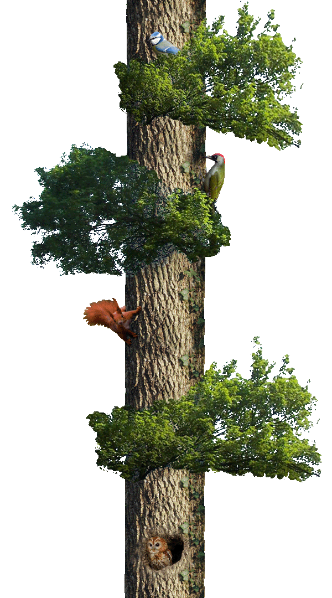

Références
Cette page rassemble mes œuvres préférées, servant de références dans mon travail.
Cette page évolue constamment.
Dernière mise à jour : 13 février 2024
Peinture

La femme en bleu
lisant une lettre
Johannes Vermeer, 1662-1665.

Le pain
Tatiana Yablonskaya, 1949.

Les halles
Léon Lhermitte, 1895.
Miracle arctique
Andrei Yakovlev, ~1960.

Procession religieuse dans province de Koursk
Ilya Répine, 1880-1883.

Un accident
Pascal Dagnan-Bouveret, 1879.
La mouette blessée
Jules Breton, 1878.

Les glaneuses
Jules Breton, 1854.
à propos


Site conçu par Amaury Hardré, 2024
références
cinéma
musique
livre
jeu